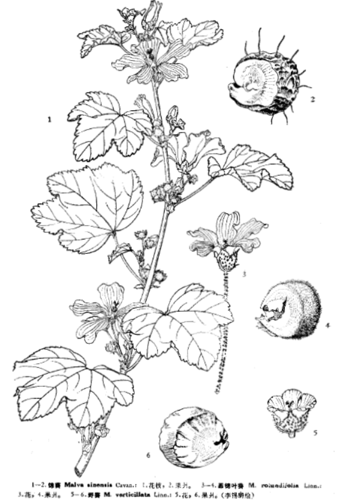

出现篇目
芘芣、荆葵
古代记载 《毛诗故训传》
荍，芘芣也。（《毛传》注《东门之枌》）
《毛诗草木鸟兽虫鱼疏》
一种小者名锦葵，即荆葵也。《尔雅》谓之荍（音乔）。其铢钱，粉红色，有紫缕纹。掌禹锡《补注本草》，谓此即戎葵，非矣。然功用亦相似。
《毛诗正义》
正义曰：“荍，芘芣”，《释草》文。舍人曰：“荍，一名蚍衃。”郭璞曰：“今荆葵也，似葵，紫色。”谢氏云：“小草，多华少叶，叶又翘起。”陆机《疏》云：“芘芣，一名荆葵，似芜菁，华紫，绿色可食，微苦。”是也。椒之实芬香，故以相遗也。定本云“椒，芳物”。（《毛诗正义》疏《东门之枌》）
《诗集传》
荍、芘芣也。又名荆葵。紫色。（《诗集传》集注《东门之枌》)
《本草纲目》
一种小者名锦葵，即荆葵也。《尔雅》谓之荍（音乔）。其铢钱，粉红色，有紫缕纹。掌禹锡《补注本草》，谓此即戎葵，非矣。然功用亦相似。
当代记载 《中国植物志》
锦葵 （Malva sinensis），锦葵科，锦葵属 植物。二年生或多年生直立草本。叶圆心形或肾形。花紫红色或白色。果扁圆形；种子黑褐色，肾形。花期5-10月。
我国南北各城市常见的栽培植物，偶有逸生。南自广东、广西，北至内蒙古、辽宁，东起台湾，西至新疆和西南各省区，均有分布。印度也有。

<中国植物志>